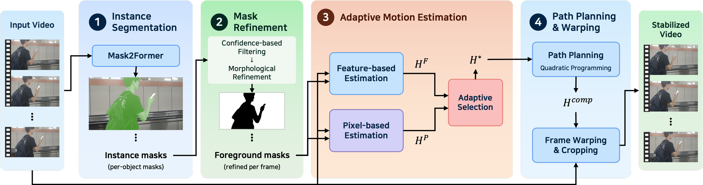

1
Instance Segmentation
Mask2Former runs on the input video and produces per-object instance masks for every frame, localising the moving foreground that would otherwise contaminate global motion estimation.
Our method stabilizes video reliably even when a foreground object occupies a large portion of the frame and moves independently of the background.
Video stabilization is now regarded as a fundamental and essential feature in modern cameras. Many existing methods do not account for foreground motion, and stabilization quality can degrade significantly when foreground motion dominates the background motion. Methods that explicitly exclude the foreground have also been proposed. However, once the foreground is removed, the remaining background region and feature points can occasionally become insufficient, causing a single motion estimation approach to fail. Although such failures are rare, they produce a visually prominent and abrupt jump in the stabilized video, severely degrading the overall quality. This paper proposes a video stabilization method robust to large foreground motion. The method excludes foreground motion via segmentation and adaptively combines feature-based and pixel-based motion estimation, thereby suppressing such rare but critical failures. The pixel-based translational displacement is interpreted as an equivalent camera rotation and converted into a homography. This keeps the camera path continuous even as the two estimation methods are switched between frames. In addition, we propose the Foreground-Dominant Video Stabilization (FDVS) dataset, in which foreground objects occupy a large portion of the frame, together with two evaluation metrics, IFMAE and BIFMAE, for assessing performance in such scenarios. Experimental results show that the proposed method performs comparably to existing methods on the NUS dataset, which represents general shooting conditions. On the foreground-dominant FDVS dataset, it achieves superior stabilization results, both in metrics measuring background stability and in qualitative analysis.

Mask2Former runs on the input video and produces per-object instance masks for every frame, localising the moving foreground that would otherwise contaminate global motion estimation.
Instance masks are filtered by confidence and cleaned with morphological operations, yielding a single foreground mask per frame. Its complement restricts all subsequent estimation to static scene content.
Two estimators run in parallel on the background. The feature-based path fits HF from background correspondences only; the pixel-based path compares valid background pixels directly to recover translation, in-plane rotation and scale, and combines them into HP. The candidate with the smaller background alignment error becomes H* for that frame pair.
The selected homographies are accumulated into a camera path and smoothed by a quadratic-programming formulation. The compensation transform Hcomp — the difference between the original and smoothed paths — warps each frame before cropping to the common valid region.
Two metrics that score stabilization directly from output pixels, with no motion estimation in the loop.
Cropping ratio, distortion score and stability score are all computed from a global homography estimated on the output video. In scenes where foreground motion dominates, that homography can become biased toward the foreground or fail outright, which undermines the reliability of the metrics themselves. We therefore also measure the inter-frame pixel difference of the output directly.
The spatial average of the absolute difference at matching pixel locations in two consecutive stabilized frames, then the temporal average over all frame pairs.
The same quantity over Ωout,bgi — pixels classified as background in both consecutive output frames. Masks are regenerated on each method's own output by the same procedure, so every method is scored identically.
Lower is better for both. BIFMAE isolates background stability, which is what the proposed selection criterion optimizes. IFMAE covers the whole frame including the foreground — a region never considered during optimization — so it checks that background-centric estimation does not come at the cost of the frame as a whole.
Video-level averages over the 56 videos that every method completed. Bundled Camera Paths failed on videos 22, 23, 58, 60 and 61, so those are excluded for all methods.
IFMAEavg follows the same ranking: ours 7.94, GlobalFlowNet-Affine 8.06, Bundled Camera Paths 8.67, DUT 8.81, DIFRINT 9.82, unstable input 10.85. Against the input this is a 30.7% reduction in BIFMAE and 26.0% in IFMAE. The margin over GlobalFlowNet-Affine is small in the average and close to even per video, while the gap to the remaining methods is consistent.
Choose a baseline to display on the left, and a scene from the strip below. The right half is always our result.
An independently moving foreground object makes the observed motion diverge from the actual camera motion. Prior work suppresses this by detecting and removing foreground motion, or by using semantic information to separate foreground from background.
The present research has been conducted by the Research Grant of Kwangwoon University in 2026. This research was supported by the ANCHOR through the Seoul ANCHOR Center, funded by the Ministry of Education (MOE) and the Seoul Metropolitan Government (2026-ANCHOR-01-004-07).
@article{lee2026videostab,
title = {Video Stabilization Robust to Large Foreground Motion
via Adaptive Hybrid Motion Estimation},
author = {Lee, Seungyeon and Lee, Yun Gu},
journal = {IEEE Access},
year = {2026}
}